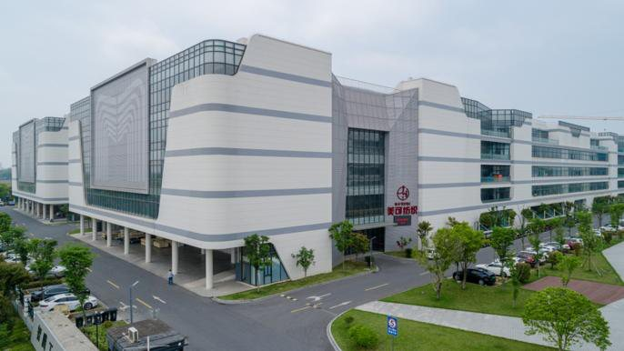

Notre usine et nos ateliers
Chaque étape, du rouleau de tissu au carton d’export, dans l’ordre. Voici les ateliers où vos alèses sont fabriquées.

101Comment une alèse est fabriquée
Notre site de production
Les alèses sont fabriquées sous un même toit : contrecollage, découpe, matelassage, couture, inspection et emballage, puis entrepôt et chargement export. Un seul site, c’est un seul système qualité et des délais courts.
| Procédés internes | Contrecollage, découpe, matelassage, couture, inspection, emballage |
|---|---|
| Produits | Alèses de lit, tapis pour animaux, protections d’assise, matelas à langer, bavoirs adultes |
| Système qualité | ISO 9001 ; audit social BSCI |
 50
50Atelier de contrecollage
Le film TPU est contrecollé sur le tissu d’envers sur une ligne continue. L’adhérence et l’étanchéité déterminent la durée de vie d’une alèse ; chaque rouleau est donc contrôlé avant la découpe.
| Barrière | Film TPU 0,025 mm, 30 g/m² ; ou PVC |
|---|---|
| Contrôle | Test d’étanchéité par rouleau ; contrôle d’adhérence |
 51
51Découpe automatique
Les couches de tissu sont étalées et découpées sur des tables de coupe automatiques, pour que chaque taille d’une livraison corresponde à la fiche technique.
| Tolérance | ±2 cm sur la taille finie |
|---|---|
| Tailles | 19 tailles standard et toute taille sur mesure |
 52
52Atelier de matelassage
Des matelasseuses multi-aiguilles assemblent le dessus et l’âme absorbante. Un matelassage dense empêche l’âme de se tasser après des centaines de lavages.
| Motifs | 12 motifs standard ou un matelassage logo personnalisé |
|---|---|
| Cœur | 200 / 230 / 270 / 340 g/m² |
 53
53Lignes de couture
Les bords sont bordés d’un biais à double couture ; poignées, rabats et étiquettes sont cousus ici.
| Bordure | Biais à double piqûre, coins arrondis |
|---|---|
| Accessoires | Poignées (4 / 6 / 8), rabats, étiquettes tissées et d’entretien |
 105
105Vue de l’atelier de couture
Plusieurs lignes de couture fonctionnent en parallèle : les commandes mixtes (plusieurs modèles, tailles et couleurs) sont produites en même temps.
| Commandes mixtes | Plusieurs modèles, tailles et couleurs par commande |
|---|
 54
54Inspection
Les alèses finies sont contrôlées (taille, coutures, biais, taches, étanchéité) avant emballage. L’inspection finale suit l’AQL 2,5, et les inspecteurs tiers sont les bienvenus.
| En ligne | Contrôle de la taille, des coutures et du biais |
|---|---|
| Final | Rapport AQL 2,5 par commande |
 55
55Emballage et entrepôt
Les alèses sont pliées et emballées selon votre cahier des charges, étiquetées puis chargées dans des cartons export. Chaque carton est pesé pour détecter les erreurs de quantité.
| Emballage | Sachet, carte en-tête, boîte couleur, étiquettes FBA |
|---|---|
| Carton | Carton export, pesée de chaque carton |
| Expédition | FOB / CIF / DDP |
Certificats et rapports d’essai
Les copies, avec numéro et périmètre, sont fournies avec votre commande.
 103
103 104
104Ce que nous pouvons documenter
| Tissus | Options de tissus OEKO-TEX® Standard 100 (classe de produit I pour bébés) |
|---|---|
| Management | Système de management de la qualité ISO 9001 ; audit social BSCI |
| Tests chimiques | Test REACH SVHC ; test CPSIA pour produits bébé (États-Unis) |
| Performance | Test d’étanchéité (ISO 811) après 50 / 100 / 300 lavages ; tenue au lavage (ISO 6330) ; absorption par niveau |
| Inspection finale | Rapport AQL 2,5 par commande ; inspection tierce bienvenue |
Prêt à lancer votre gamme d'alèses lavables ?
Indiquez-nous votre marché, vos tailles et vos quantités. Nous répondons sous un jour ouvré avec fiche technique et grille de prix.